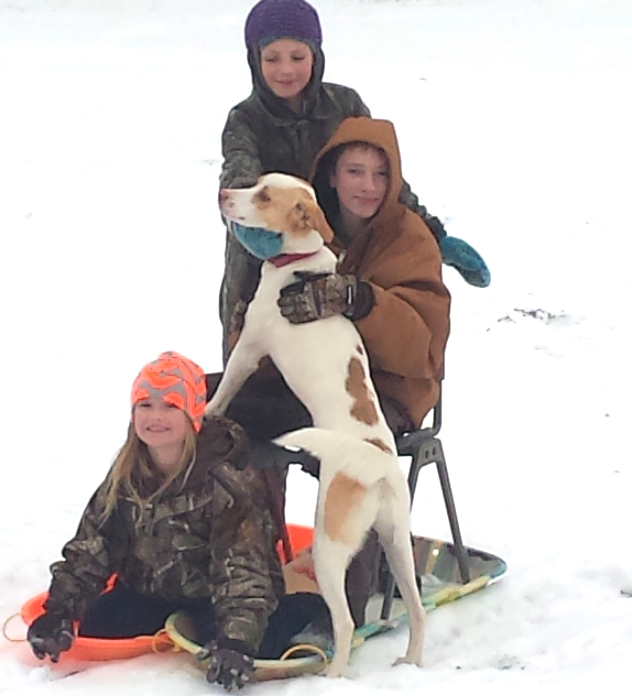

About
 Have you ever seen the movie We Bought a Zoo? Well... We bought a farm. While our situation is not nearly as impressive.adenturous/crazy, to us it is still the same basic feeling. Holy cow, WHAT are we doing? In 2013, we bought our little slice of heaven. We had no farming skills and no real vision of doing any farming. We needed a place to live (and fast, as our house had sold and we couldn't find anythig to rent in the area) and were hoping to find something with a little land. This little gem happened to find us just in time. Istn't it fascinating where our life journeys lead us?
So, now our little family of 5 is enjoying the farm life and learning all kinds of new skills each year. We have some great stories and have learned to laugh at ourselves - a lot. Because really, how can you not laugh at running around chasing pigs yealling 'stop that pig!' to your neighbor you have never met? We always have new ideas; the good, the bad, and the ugly come to mind and again, a whole lot of laughing. Even the kids come to us with some amazing ideas of things to try. So, when we are not working our full time jobs (medical research at UNC) or running the kids around you will find us tinkering on the farm.